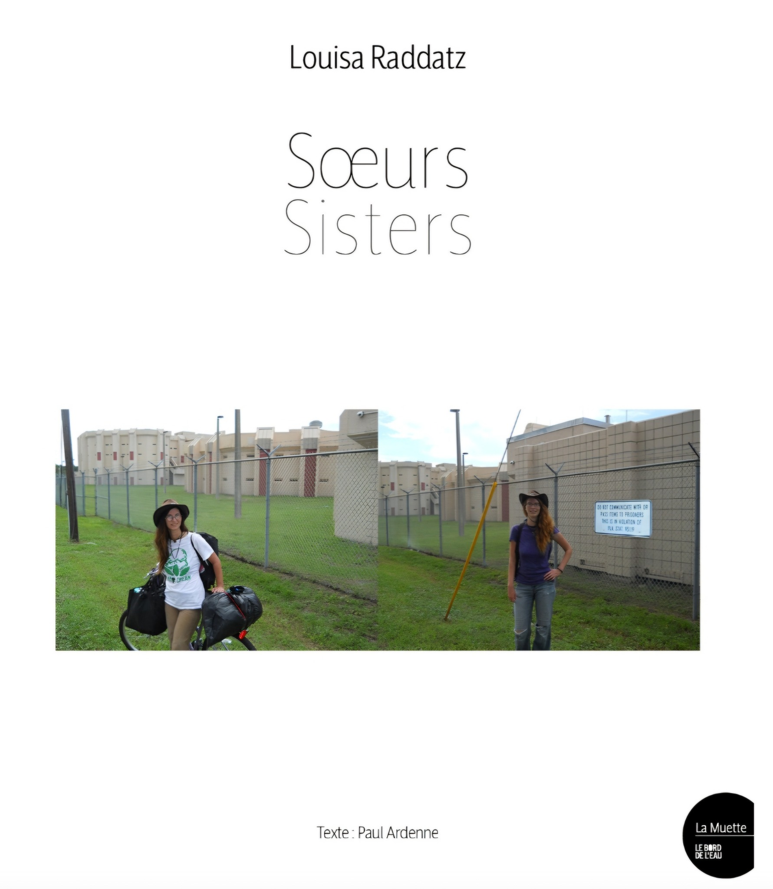

Texte
Julia und Gina Raddatz: Die Geschichte hinter "Soeurs/Sisters"
1. Klarstellung der Autorenschaft
Die Autorenschaft des Buches "Soeurs/Sisters" ist ein zentraler Aspekt, der bei der Betrachtung dieses Werkes zunächst geklärt werden muss. Eine genaue Analyse der verfügbaren Informationen zeigt, dass es sich bei Julia und Gina Raddatz nicht um die Autorinnen des Buches handelt, sondern vielmehr um die Protagonistinnen und fotografischen Akteurinnen, deren Leben und Reise den Inhalt des Buches prägen. Die eigentliche Autorin und künstlerische Gestalterin ist ihre jüngere Schwester, Louisa Raddatz, die die von ihren Schwestern geschaffenen Materialien kuratierte, editierte und in ein kohärentes künstlerisches Narrativ verwandelte. Diese Unterscheidung ist fundamental für das Verständnis des Buches als ein künstlerisches Projekt, das die Grenzen zwischen dokumentarischem Fotojournalismus und persönlicher, konzeptueller Kunst verwischt. Das Werk ist somit nicht nur ein Reisebericht, sondern auch eine Reflexion über Geschwisterbeziehungen, Abwesenheit und die Macht der Selbstdarstellung in der Fotografie
1.1 Die Rolle von Julia und Gina Raddatz
Julia und Gina Raddatz sind die zentralen Figuren und die kreative Quelle für das Buch "Soeurs/Sisters". Ihre Rolle ist die der Reisenden, der Fotografinnen und der Geschwister, deren einzigartige Beziehung und gemeinsame Erfahrung den Kern des Buches bilden. Sie sind nicht die Autorinnen im klassischen Sinne, sondern diejenigen, die durch ihre Handlungen und ihre Selbstdarstellung die "Rohmaterialien" für Louisa Raddatz' künstlerisches Projekt lieferten. Ihre Entscheidung, eine jahrelange Radreise durch die USA zu unternehmen und diese durch eine Vielzahl von Selbstporträts zu dokumentieren, bildet die narrative und visuelle Grundlage des Buches. Die Fotografien, die sie während ihrer Reise machten, sind keine professionellen Aufnahmen im klassischen Sinn, sondern intime, spontane und wiederkehrende Momentaufnahmen, die ihre Perspektive auf die Welt und ihre Beziehung zueinander zeigen. Diese Bilder sind das Herzstück des Buches und vermitteln eine unmittelbare, persönliche und authentische Atmosphäre, die durch die künstlerische Bearbeitung ihrer Schwester Louisa noch verstärkt wird.
1.1.1 Subjekte des Buches
Julia und Gina Raddatz sind die unbestrittenen Subjekte des Buches "Soeurs/Sisters". Jede Seite des fotografischen Portfolios widmet sich ihrer Reise, ihren Erlebnissen und ihrer Darstellung. Die gesamte visuelle Erzählung kreist um die beiden jungen deutschen Frauen, die sich auf einer abenteuerlichen Reise durch die Vereinigten Staaten befinden. Die Fotografien zeigen sie in verschiedensten Landschaften, mit unterschiedlichen Kleidungsstilen und in unterschiedlichen Stimmungen, wobei ein wiederkehrendes Motiv ihre Verbindung und ihr gemeinsames Erleben ist. Die Tatsache, dass sie die Subjekte sind, bedeutet jedoch nicht, dass sie passiv in dem Projekt agieren. Im Gegenteil, durch die Wahl der Selbstporträts als primäres Medium der Dokumentation, übernehmen sie eine aktive Rolle in der Gestaltung ihrer eigenen Darstellung. Sie entscheiden, wie sie sich zeigen möchten, in welchem Kontext und mit welcher Gefühlslage. Diese Selbstinszenierung ist ein zentrales Element des Buches und verleiht ihm eine Tiefe, die über einen rein dokumentarischen Reisebericht hinausgeht. Die Betrachtung ihrer Bilder erlaubt dem Leser, nicht nur ihre Reise mitzuverfolgen, sondern auch ihre Persönlichkeiten, ihre Dynamik als Geschwisterpaar und ihre individuelle wie gemeinsame Sicht auf die Welt zu ergründen.
1.1.2 Die Radreisenden und Fotografen
Die Identität von Julia und Gina Raddatz als Radreisende und Fotografinnen ist untrennbar mit dem Inhalt und der Form des Buches "Soeurs/Sisters" verbunden. Ihre Entscheidung, die USA mit dem Fahrrad zu durchqueren, prägt die Langsamkeit, die Intensität und die unmittelbare Erfahrung ihrer Reise. Diese Art des Reisens erlaubt es ihnen, die Landschaften und Kulturen, durch die sie fahren, auf eine sehr direkte und persönliche Weise wahrzunehmen. Die Herausforderungen und Freuden einer solchen Reise – von widrigen Wetterbedingungen bis zu den spontanen Begegnungen mit Fremden – werden in den Interviews und Berichten über ihre Reise deutlich. Als Fotografinnen wählen sie das Medium des Selbstporträts, um ihre Erfahrungen festzuhalten. Diese Wahl ist bedeutend, da sie die Kontrolle über ihre eigene Darstellung behalten. Sie sind nicht die fotografierten Objekte eines externen Beobachters, sondern die aktiven Gestalterinnen ihres eigenen Bildes. Die Fotos, die sie während ihrer Reise von 2008 bis 2015 machten, sind die einzigen visuellen Verbindungen zu ihrer Familie, insbesondere zu ihrer Schwester Louisa, die sie in Deutschland zurückgelassen hatten. Diese Bilder, die sie in Hunderten an ihre Familie sendeten, sind die Rohstoffe, aus denen Louisa Raddatz schließlich das Buch "Soeurs/Sisters" komponierte.
1.2 Die eigentliche Autorin: Louisa Raddatz
Louisa Raddatz ist die eigentliche Autorin und künstlerische Leiterin des Buches "Soeurs/Sisters". Als jüngere Schwester von Julia und Gina ist sie diejenige, die die Hunderte von Selbstporträts, die ihre Schwestern während ihrer USA-Reise schickten, sammelte, kuratierte und in ein künstlerisches Werk verwandelte. Ihre Rolle geht weit über die einer einfachen Herausgeberin hinaus. Sie ist eine Künstlerin, die mit dem vorhandenen Material arbeitet, es neu interpretiert und ihm eine neue Bedeutung verleiht. Durch die Auswahl, das Neubearbeiten und die thematische Anordnung der Fotografien, die ursprünglich in keiner chronologischen Reihenfolge vorlagen, schuf sie ein skriptartiges Narrativ ihrer Reise. Dieser Prozess der künstlerischen Bearbeitung ist ein zentraler Bestandteil des Buches und verleiht ihm seine einzigartige Qualität. Louisa Raddatz nutzt die Fotografien ihrer Schwestern, um ihre eigene Beziehung zu ihnen zu hinterfragen, eine Beziehung, die von deren plötzlicher Abwesenheit geprägt ist. Das Buch wird so zu einer Reflexion über das Fehlen, die Liebe zwischen Schwestern und die Suche nach einer Verbindung über Distanz und Zeit hinweg.
1.2.1 Künstlerin und Zusammenstellerin des Buches
Louisa Raddatz ist eine in Frankreich lebende Künstlerin, die das Buch "Soeurs/Sisters" als künstlerisches Projekt konzipiert und umgesetzt hat. Ihre Rolle als Zusammenstellerin des Buches ist ein aktiver und kreativer Prozess. Sie wählte aus den Hunderten von eingesandten Fotografien aus, schnitt sie neu, ordnete sie thematisch und verzichtete dabei bewusst auf eine chronologische Darstellung. Diese künstlerische Entscheidung ist von zentraler Bedeutung, da sie das Buch von einem einfachen Reisetagebuch zu einem konzeptuellen Werk über die Geschwisterbeziehung und die Wahrnehmung von Zeit und Raum erhebt. Durch die thematische Gruppierung der Bilder, die oft sehr ähnliche Posen und Landschaften zeigen, hebt sie die repetitive und fast zeitlose Qualität der Reise hervor. Die Fotografien zeigen in der Regel zwei lächelnde junge Frauen in einer amerikanischen Landschaft, was Louisa Raddatz dazu veranlasst, über die Natur ihrer Beziehung zu ihren Schwestern nachzudenken und sich symbolisch in die Reise einzuschließen. Sie stellt sich die Frage, ob sie nicht selbst die Fotografin sei, und verwandelt das Buch so in eine künstlerische Auseinandersetzung mit Identität, Erinnerung und der eigenen Rolle im familiären Gefüge.
1.2.2 Die jüngere Schwester von Julia und Gina
Die Tatsache, dass Louisa Raddatz die jüngere Schwester von Julia und Gina ist, verleiht dem Projekt "Soeurs/Sisters" eine zusätzliche emotionale und persönliche Tiefe. Die Fotografien, die sie für das Buch auswählte, waren für sie die einzige Verbindung zu ihren plötzlich abgereisten Schwestern, die die Familie mit einem Brief auf dem Küchentisch verlassen hatten. Dieser Hintergrund der Abwesenheit und des Fehlens ist ein durchgehendes Thema in ihrer künstlerischen Arbeit. Das Buch ist nicht nur eine Dokumentation der Reise ihrer Schwestern, sondern auch ein Versuch, mit ihrer eigenen Erfahrung der Zurücklassung umzugehen. Die künstlerische Bearbeitung der Bilder wird so zu einem Akt der Aneignung und der Verarbeitung. Indem sie die Bilder ihrer Schwestern neu ordnet und interpretiert, versucht sie, ihre eigene Beziehung zu ihnen zu verstehen und zu bewahren. Die Liebe und der unbedingte Zusammenhalt zwischen den Schwestern, der trotz der physischen Distanz bestehen bleibt, ist das zentrale Thema, das über dem Schmerz und der Stille der Trennung steht. Diese persönliche Verbindung macht "Soeurs/Sisters" zu einem besonders intimen und bewegenden Werk.
1.2.3 Zusammenarbeit mit Paul Ardenne
Das Buch "Soeurs/Sisters" ist nicht nur das Werk von Louisa Raddatz, sondern entstand auch in Zusammenarbeit mit Paul Ardenne, einem bekannten französischen Kunsthistoriker und Autor. Die gemeinsame Autorenschaft deutet darauf hin, dass das Buch auch eine kritische und kontextualisierende Ebene besitzt. Paul Ardenne hat möglicherweise einen einführenden Text oder Kommentare zu den Bildern beigesteuert, die die künstlerische Bedeutung des Projekts in einen größeren kunsthistorischen oder sozialen Kontext einordnen. Die Zusammenarbeit mit einem etablierten Kunsthistoriker verleiht dem Werk zusätzliche Glaubwürdigkeit und hebt es von einem rein persönlichen Projekt zu einem anerkannten Beitrag zur zeitgenössischen Kunst ab. Die Verbindung von Louisa Raddatz' persönlicher, emotionaler Perspektive als Schwester und Paul Ardennes analytischem, kunsthistorischem Blickwinkel schafft eine vielschichtige Lektüre, die sowohl das Herz als auch den Verstand anspricht. Diese Kooperation unterstreicht die Ambition des Buches, nicht nur eine Geschichte zu erzählen, sondern auch Fragen zur Fotografie, zur Selbstdarstellung und zur Geschwisterbeziehung in der modernen Gesellschaft zu stellen.
2. Die Radreise: Inhalt und Hintergrund
Die Radreise von Julia und Gina Raddatz durch die Vereinigten Staaten ist das zentrale Ereignis, das das Buch "Soeurs/Sisters" inspiriert und formt. Diese Reise war kein kurzer Ausflug, sondern ein jahrelanges Abenteuer, das von 2008 bis 2015 dauerte und die beiden Schwestern quer durch das Land führte. Die Motivation für diese außergewöhnliche Unternehmung war ein tiefes Interesse an der amerikanischen Geschichte und Kultur, das sie dazu brachte, die USA auf eine besonders intensive und unmittelbare Weise zu erleben. Die Reise war geprägt von spontanen Begegnungen, körperlichen Herausforderungen und der Freiheit, ohne festen Zeitplan zu reisen. Die Selbstporträts, die sie während dieser Zeit machten, sind nicht nur Urlaubsfotos, sondern ein visuelles Tagebuch ihrer Erfahrungen, das die emotionale und physische Reise der Schwestern dokumentiert. Diese Fotografien, die sie regelmäßig an ihre Familie in Deutschland schickten, wurden zum einzigen Lebenszeichen und zur einzigen Verbindung für ihre besorgte, aber stolze Familie.
2.1 Die Reise der Schwestern
Die Reise von Julia und Gina Raddatz war ein ehrgeiziges und langjähriges Projekt, das sie auf einem ungewöhnlichen Weg durch die Vereinigten Staaten führte. Sie verließen ihre Heimat in Deutschland, um ein tiefes Verlangen zu erfüllen, das Land der unbegrenzten Möglichkeiten aus nächster Nähe kennenzulernen. Ihre Reise war keine organisierte Tour, sondern eine persönliche Entdeckungsreise, die von Neugier und einem starken Interesse an der amerikanischen Kultur und Geschichte angetrieben wurde. Die Art und Weise, wie sie reisten – mit dem Fahrrad und ohne festen Zeitplan – erlaubte es ihnen, eine tiefe Verbindung zu den Menschen und Orten herzustellen, die sie besuchten. Die Berichte über ihre Reise zeigen ein Bild von zwei mutigen jungen Frauen, die sich auf ein Abenteuer einlassen, das sie körperlich und mental fordert, aber auch unvergessliche Erfahrungen und Begegnungen ermöglicht.
2.1.1 Zeitraum: 2008-2015
Die Radreise von Julia und Gina Raddatz erstreckte sich über einen bemerkenswert langen Zeitraum von 2008 bis 2015. Diese sieben Jahre sind ein Indikator für die Tiefe und Intensität ihres Projekts. Es war keine typische Reise mit einem festen Start- und Enddatum, sondern ein fortlaufendes Lebensstück, das sich über einen erheblichen Teil ihrer jungen Erwachsenenzeit erstreckte. Die lange Dauer der Reise wird auch in der Rezeption des Buches betont, da sie die repetitive und fast zeitlose Qualität der Selbstporträts erklärt. Die Fotografien zeigen die Schwestern in verschiedenen Jahreszeiten und an verschiedenen Orten, aber die Essenz ihrer Darstellung bleibt konstant. Diese Kontinuität über einen so langen Zeitraum hinweg verleiht dem Projekt eine fast meditative Qualität und hebt die Beharrlichkeit und das tiefe Engagement der Schwestern für ihr Abenteuer hervor. Die Reise war so umfangreich, dass sie, wie in einem Bericht erwähnt, sogar nach ihrer ursprünglich geplanten Visadauer hinausging, was ihre Entschlossenheit unterstreicht.
2.1.2 Route: Quer durch die USA
Die Route von Julia und Gina Raddatz führte sie quer durch die gesamten Vereinigten Staaten. Ihre Reise begann an der Ostküste in Philadelphia und führte sie durch eine Vielzahl von Staaten und Landschaften. Sie besuchten historische Stätten wie Mount Vernon und die Freiheitsglocke in Philadelphia, tauchten in die Kultur des Südens ein, indem sie Städte wie Charleston und Savannah besuchten, und erlebten die Vielfalt der amerikanischen Landschaft, von den Stränden Floridas bis zu den Wüsten und Canyons des Südwestens. Ein Zeitungsbericht aus Amarillo, Texas, dokumentiert ihren Aufenthalt dort auf dem Weg nach Südkalifornien, während ein anderer Bericht ihre Reise durch Louisiana und ihre Teilnahme am Alligator Festival schildert. Diese vielfältigen Eindrücke spiegeln sich in den Hintergründen ihrer Selbstporträts wider, die eine Collage der amerikanischen Landschaft und Kultur bilden. Die Route war nicht starr geplant, sondern entwickelte sich organisch, was ihnen erlaubte, spontan zu bleiben und auf Einladungen und Empfehlungen von Menschen, denen sie begegneten, zu reagieren. Diese Offenheit für das Unvorhersehbare war ein Schlüsselmerkmal ihrer Reise.
2.1.3 Motivation: Interesse an amerikanischer Geschichte und Kultur
Die Motivation von Julia und Gina Raddatz für ihre ausgedehnte Radreise war ein tiefes und akademisch geprägtes Interesse an der amerikanischen Geschichte und Kultur. Beide Schwestern waren Studentinnen der Amerikanistik an der Universität München, was ihre Neugier und ihr Wissensdurst erklärt. Gina Raddatz äußerte in einem Interview, dass sie sich besonders für die amerikanische Geschichte interessiere, da sie im Vergleich zur europäischen Geschichte "kompakter" sei. Dieses Interesse führte sie zu historischen Stätten wie dem Alamo in San Antonio und den Plantagen entlang des Mississippi. Ihre Reise war also nicht nur ein Abenteuer, sondern auch eine Art Feldforschung, eine praktische Ergänzung ihrer akademischen Studien. Sie wollten die USA nicht nur als Touristen sehen, sondern eine tiefere Verbindung zum Land und seinen Menschen aufbauen. Diese Motivation spiegelt sich in der Art ihrer Begegnungen wider, die oft von einer echten Neugier und einem Wunsch zu lernen geprägt waren. Die Freundlichkeit und Unterstützung der Amerikaner, denen sie begegneten, war für sie eine der prägendsten Erfahrungen ihrer Reise und bestätigte ihre positive Sicht auf das Land.
2.2 Die Selbstporträts
Die Selbstporträts sind das Herzstück des Buches "Soeurs/Sisters" und das zentrale Medium, durch das die Geschichte von Julia und Gina Raddatz erzählt wird. Diese Fotografien, die sie während ihrer gesamten Reise machten, sind weit mehr als nur Erinnerungsfotos. Sie sind ein bewusst gewähltes Mittel der Selbstdokumentation und -inszenierung. Durch die Wahl des Selbstporträts behalten Julia und Gina die volle Kontrolle über ihre eigene Darstellung. Sie entscheiden, wann, wo und wie sie sich zeigen möchten. Diese Autonomie ist ein entscheidender Aspekt des Projekts, da sie die Fotografien von einer möglichen Fremdwahrnehmung befreit und ihnen eine unmittelbare, intime Authentizität verleiht. Die Bilder sind oft in typischen amerikanischen Landschaften aufgenommen, mit den beiden Schwestern als wiederkehrende, lächelnde Protagonistinnen. Diese Wiederholung schafft ein visuelles Motiv, das die Einheit und den Zusammenhalt der Schwestern unterstreicht, während die unterschiedlichen Hintergründe die Vielfalt ihrer Reise dokumentieren.
2.2.1 Entstehung während der Reise
Die Selbstporträts entstanden kontinuierlich während der gesamten Radreise von Julia und Gina Raddatz von 2008 bis 2015. Sie waren ein integraler Bestandteil ihrer Reiseerfahrung und ihre bevorzugte Methode, ihre Abenteuer festzuhalten. Die Fotos wurden mit einer Kamera aufgenommen, die sie selbst bedienten, was ihnen die Freiheit gab, spontan zu sein und ihre Momente der Ruhe und Reflexion einzufangen. Die Bilder zeigen sie in einer Vielzahl von Situationen: an Straßenrändern, vor ikonischen Sehenswürdigkeiten, inmitten atemberaubender Natur oder einfach nur in einem Moment der Pause. Die Entstehung der Fotos ist eng mit dem Rhythmus ihrer Reise verknüpft. Sie dokumentieren nicht nur die Orte, sondern auch die körperliche Anstrengung und die Freude des Radfahrens. Die Tatsache, dass sie die Fotos selbst machten, verleiht ihnen eine unmittelbare, ungefilterte Qualität. Es gibt keine professionelle Beleuchtung oder Inszenierung, sondern nur das reale Licht der Sonne und die echten Emotionen der beiden Schwestern. Diese Authentizität ist es, was die Bilder so kraftvoll und berührend macht.
2.2.2 Versendung der Fotos an die Familie
Die Selbstporträts von Julia und Gina Raddatz hatten eine doppelte Funktion: Sie dienten nicht nur der persönlichen Dokumentation, sondern waren auch die einzige Verbindung zu ihrer Familie in Deutschland. Nachdem sie die Familie überraschend verlassen hatten, sendeten sie die Fotografien in Hunderten nach Hause. Diese Bilder wurden zu einzigartigen Lebenszeichen, die ihre Eltern und ihre jüngere Schwester Louisa über ihren Aufenthaltsort und ihr Wohlbefinden informierten. Für Louisa Raddatz waren diese Fotos besonders bedeutsam, da sie die einzige visuelle Verbindung zu ihren abwesenden Schwestern darstellten. Die regelmäßige Zustellung der Bilder wurde zu einem ritualisierten Akt der Kommunikation über die Entfernung hinweg. Die Fotos zeigten den Eltern, dass ihre Töchter sicher und glücklich waren, und beruhigten sie nach der anfänglichen Sorge. Für Louisa waren sie jedoch mehr als nur Berichte über die Sicherheit ihrer Schwestern; sie waren Fenster in eine Welt, an der sie selbst nicht teilnehmen konnte, und der Ausgangspunkt für ihr künstlerisches Projekt, das aus der Verarbeitung dieser Abwesenheit entstand.
2.2.3 Die zentrale Rolle der Fotos im Buch
Die Selbstporträts spielen eine zentrale und unverzichtbare Rolle im Buch "Soeurs/Sisters". Sie sind nicht nur Illustrationen eines Textes, sondern der Hauptträger der Erzählung. Das Buch ist als fotografisches Portfolio konzipiert, in dem die Bilder für sich selbst sprechen. Die Hunderte von Selbstporträts, die Louisa Raddatz auswählte, bilden die narrative Struktur des Buches. Durch die thematische Anordnung der Bilder, bei der auf eine chronologische Reihenfolge verzichtet wurde, schuf Louisa Raddatz eine neue, künstlerische Erzählung, die über die bloße Dokumentation der Reise hinausgeht. Die Fotos sind die Bausteine, aus denen sie eine Reflexion über die Geschwisterbeziehung, die Wahrnehmung von Zeit und Raum und die eigene Rolle als die Zurückgelassene aufbaut. Die wiederkehrenden Motive in den Bildern – die lächelnden Schwestern, die typischen amerikanischen Landschaften – schaffen eine visuelle Poesie, die die Essenz ihrer Reise und ihrer Beziehung einfängt. Die Fotos sind also nicht nur Inhalt, sondern auch das Medium, durch das die künstlerische Aussage des Buches vermittelt wird.
3. Das Buch "Soeurs/Sisters"
Das Buch "Soeurs/Sisters" ist ein einzigartiges fotografisches Werk, das die Grenzen zwischen Reisebericht, Familienalbum und konzeptueller Kunst verwischt. Es wurde von Louisa Raddatz zusammengestellt und präsentiert die Selbstporträts ihrer Schwestern Julia und Gina, die von 2008 bis 2015 eine Radreise durch die USA unternahmen. Das Buch wurde im Oktober 2023 im Verlag La Muette/Le Bord de l'eau veröffentlicht und bietet mit einem Vorwort von Paul Ardenne und einer thematischen Anordnung der Bilder einen intimen und künstlerischen Einblick in das Abenteuer der beiden Frauen und ihre enge Geschwisterbeziehung. Es ist ein Zeugnis von Mut, Neugier und der Kraft der visuellen Sprache.
3.1 Konzept und Aufbau
Das Konzept von "Soeurs/Sisters" ist klar auf die visuelle Erzählung ausgerichtet. Das Buch ist als ein fotografisches Portfolio gestaltet, das die Hunderte von Selbstporträts der Schwestern in den Mittelpunkt stellt. Der Aufbau folgt nicht einer chronologischen Reihenfolge, sondern einer thematischen Gliederung, die Louisa Raddatz entwickelte. Diese nicht-lineare Anordnung ermöglicht es dem Betrachter, die Bilder in einem neuen, künstlerisch überarbeiteten Kontext zu sehen. Die wiederkehrenden Motive und die visuelle Kohärenz der Fotografien schaffen eine starke narrative Struktur, die die Lesenden durch die Seiten des Buches führt. Das Buch beginnt mit einem Zitat der Schwestern: "Vous ne pouvez laisser la peur vous empêcher de vivre votre vie" ("Man kann die Angst nicht daran hindern, sein Leben zu leben"), das die Grundstimmung und die Philosophie ihrer Reise einfängt.
3.1.1 Ein fotografischer Reisebericht
"Soeurs/Sisters" ist ein Reisebericht, der sich von konventionellen Formaten deutlich unterscheidet. Anstelle von ausführlichen Textbeschreibungen und Reiserouten erzählt das Werk die Geschichte der Schwestern ausschließlich durch ihre eigenen Fotografien. Dieser rein visuelle Ansatz ist ein bewusstes künstlerisches Stilmittel, das dem Betrachter eine unmittelbare und authentische Erfahrung ermöglicht. Die Fotos sind die einzigen Zeugen der Reise, die dem Leser zur Verfügung stehen, und zwingen ihn, sich auf die Bilder zu konzentrieren, die Details zu entdecken und die Geschichte aus den visuellen Hinweisen zusammenzusetzen. Diese Herangehensweise macht das Buch zu einem aktiven Erlebnis, das die Fantasie und das Mitdenken der Leser fordert. Es ist ein Reisebericht, der nicht erzählt, sondern gezeigt wird, und der die Kraft der Bilder nutzt, um eine komplexe Geschichte von Abenteuer, Geschwisterliebe und Selbstfindung zu vermitteln.
3.1.2 Portfolio-Format
Das Buch ist in Form eines Portfolios gestaltet. Diese Form betont den künstlerischen Anspruch des Werks und hebt es von einem gewöhnlichen Fotoalbum oder Reisetagebuch ab. Ein Portfolio ist eine Sammlung von Arbeiten, die einen künstlerischen Standpunkt oder eine bestimmte Technik zeigen. In diesem Fall ist das Portfolio eine Sammlung der Selbstporträts von Julia und Gina, die als Gesamtwerk die künstlerische Vision von Louisa Raddatz verkörpert. Die Präsentation der Bilder auf hochwertigem Papier, die sorgfältige Druckqualität und die durchdachte Seitengestaltung unterstreichen den Anspruch, ein "Künstlerbuch" zu sein. Das Portfolio-Format erlaubt es, die einzelnen Fotos als Kunstwerke zu präsentieren und gleichzeitig ihre Wirkung als Ganzes zu entfalten.
3.1.3 Thematische Anordnung statt chronologischer Reihenfolge
Ein zentrales Merkmal des Buches ist die bewusste Entscheidung Louisa Raddatz, die Fotografien nicht chronologisch, sondern thematisch anzuordnen. Diese nicht-lineare Struktur ist entscheidend für die künstlerische Aussage des Werks. Indem sie die Bilder aus ihrer zeitlichen Abfolge löst, hebt Louisa die wiederkehrenden Motive und die emotionale Konstante der Geschwisterbeziehung hervor. Die Reise wird so zu einem zeitlosen, fast mythischen Raum, der jenseits der konkreten Ereignisse existiert. Diese Anordnung lädt den Betrachter dazu ein, die Bilder assoziativ zu lesen und eigene Verbindungen herzustellen. Die Wiederholung der Motive – die beiden Schwestern in verschiedenen Landschaften – erzeugt eine meditative, fast hypnotische Wirkung und lenkt die Aufmerksamkeit auf die Konstante ihrer Beziehung inmitten der ständigen Veränderung.
3.2 Inhaltliche Schwerpunkte
Die inhaltlichen Schwerpunkte von "Soeurs/Sisters" sind tief mit dem Konzept und der Herkunft des Materials verwoben. Das Buch ist keine objektive Dokumentation, sondern eine subjektive, künstlerische Auseinandersetzung mit den Themen, die sich aus den Selbstporträts der Schwestern ergeben. Die wiederkehrenden Motive, die Darstellung der amerikanischen Landschaft und die Frage nach Identität und Geschwisterbeziehung bilden das konzeptuelle Gerüst des Buches. Diese Schwerpunkte verleihen dem Werk seine Tiefe und seine Vielschichtigkeit, die über die bloße Betrachtung schöner Reisebilder hinausgeht.
3.2.1 Die wiederkehrenden Motive der Schwestern
Das zentrale visuelle Motiv des Buches ist die wiederkehrende Darstellung der beiden Schwestern, die in den unterschiedlichsten Landschaften der USA posieren. In fast allen Fotografien sind sie zu sehen, meist lächelnd, eng beieinanderstehend und mit ihrer Kamera im Anschlag. Diese Wiederholung ist kein Zufall, sondern ein bewusstes Stilmittel, das die visuelle Kohärenz des Buches schafft. Die Konstante ihrer Anwesenheit und ihrer Beziehung zueinander steht im Kontrast zur ständigen Veränderung der Umgebung. Diese repetitive Inszenierung ihrer selbst wird zu einer Markierung ihrer Reise, zu einer visuellen Spur, die ihre Bewegung durch den Raum dokumentiert. Die Betrachtung dieser wiederkehrenden Motive führt zu einer Reflexion über die Natur ihrer Geschwisterbeziehung, die durch das gemeinsame Abenteuer gestärkt und definiert wird.
3.2.2 Die Darstellung des amerikanischen Landschaft
Die amerikanische Landschaft ist nicht nur der Hintergrund der Reise, sondern ein aktiver Bestandteil der Geschichte. Die Fotografien zeigen eine beeindruckende Vielfalt an Landschaften, von der Ostküste mit ihrer Geschichte und Politik bis zur Westküste mit ihrer Assoziation zu Freiheit und Traum. Die Schwestern dokumentieren die Weite der Prärien, die Schönheit der Küsten, die Herausforderung der Wüsten und die urbanen Zentren der USA. Die Wahl des Fahrrads als Fortbewegungsmittel ermöglichte ihnen eine besondere Nähe zu dieser Landschaft. Sie erleben sie nicht aus der Distanz eines Autos oder eines Flugzeugs, sondern mit allen Sinnen. Die Landschaft wird so zu einem Spiegel ihrer inneren Reise, zu einem Ort der Selbstfindung und des Abenteuers. Die Darstellung der Landschaft in ihren Fotos ist daher nicht nur dokumentarisch, sondern auch symbolisch für ihre Suche nach einem Ort in der Welt.
3.2.3 Die Frage nach Identität und Geschwisterbeziehung
Das Buch "Soeurs/Sisters" wirft tiefgreifende Fragen nach Identität und Geschwisterbeziehung auf. Die Reise der Schwestern ist auch eine Reise zu sich selbst. In der Abgeschiedenheit und der Herausforderung der langen Radreise entwickeln sie ihre eigene Identität, die sich von der ihrer ursprünglichen Umgebung in Deutschland unterscheidet. Die Selbstporträts sind ein Mittel, diese sich entwickelnde Identität zu erforschen und zu inszenieren. Gleichzeitig ist das Buch eine Hommage an die Geschwisterliebe. Die enge Bindung zwischen Julia und Gina ist der emotionale Kern des Projekts. Die Fotografien zeigen zwei Menschen, die sich in einer fremden Umgebung nur aneinander haben. Die Reise bringt sie, wie sie selbst betonen, noch enger zusammen. Louisa Raddatz thematisiert in ihrer künstlerischen Bearbeitung auch ihre eigene Beziehung zu ihren Schwestern, die durch deren Abwesenheit geprägt ist. Das Buch wird so zu einer Reflexion über die verschiedenen Facetten von Geschwisterbeziehungen: Nähe und Distanz, Anwesenheit und Abwesenheit, gemeinsame Erinnerung und individuelle Wege.
3.3 Veröffentlichung
Die Veröffentlichung von "Soeurs/Sisters" im Oktober 2023 markierte den Höhepunkt dieses langjährigen Projekts und machte es einem breiteren Publikum zugänglich. Die Wahl des Verlags und das Erscheinungsdatum sind wichtige Faktoren für die Rezeption des Buches als ein ernstzunehmendes Werk der zeitgenössischen Kunst.
3.3.1 Verlag: La Muette/Le Bord de l'eau
Das Buch wurde von den renommierten französischen Verlagen La Muette und Le Bord de l'eau veröffentlicht. Diese Verlage sind bekannt für ihre Publikationen im Bereich der zeitgenössischen Kunst und Fotografie. Die Tatsache, dass "Soeurs/Sisters" von ihnen herausgegeben wurde, unterstreicht den kunsttheoretischen Anspruch des Projekts und positioniert es im Kontext der aktuellen künstlerischen Diskussion. Die Zusammenarbeit mit einem solchen Verlag signalisiert, dass das Werk nicht als privates Fotoalbum verstanden werden soll, sondern als ein künstlerisches Statement, das eine kritische Auseinandersetzung verdient werden kann.